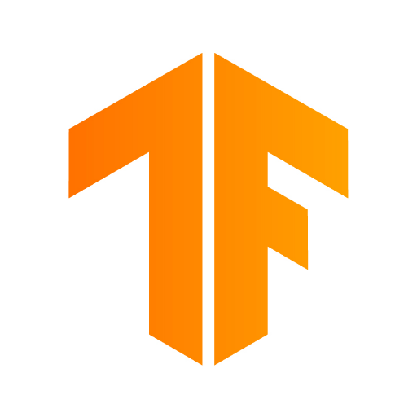
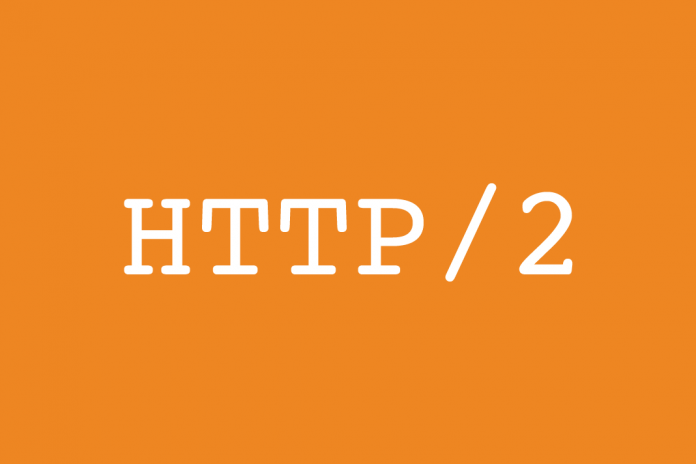

/ Windows 8.1 /
Windows 8.1 is a release of the Windows NT operating system developed by Microsoft. It was released to manufacturing on August 27, 2013, and broadly released for retail sale on October 17, 2013, about a year after the retail release of its predecessor, and succeeded by Windows 10 on July 29, 2015. Windows 8.1 was made available for download via MSDN and Technet and available as a free upgrade for retail copies of Windows 8 and Windows RT users via the Windows Store. A server version, Windows Server 2012 R2, was released on October 18, 2013.

/ Microsoft Office 2013 /
Microsoft Office 2013 (codenamed Office 15) is a version of Microsoft Office, a productivity suite for Microsoft Windows. It is the successor to Microsoft Office 2010 and the predecessor to Microsoft Office 2016. Unlike with Office 2010, no OS X equivalent was released. Microsoft Office 2013 includes extended file format support, user interface updates and support for touch among its new features and is suitable for IA-32 and x64 systems.
/ SteamOS /
SteamOS is a Linux distribution developed by Valve amd released in December 2013. It incorporates Valve's popular namesake Steam video game storefront and is the primary operating system for Steam Machines and the Steam Deck. SteamOS is open source with some closed source components.
/ SteamOS /
In May 2013, Facebook released the first version of the React JavaScript library and React Native framework, giving developers new options when developing web applications.

/ Google Maps Engine Lite /
Google Maps Engine Lite was released for Android devices in March 2013. Google wanted to turn more of its Maps users into map makers. The company launched a free custom map editor, Google Maps Engine Lite.
/ Opera /
On 28 May 2013, a beta release of Opera 15 was made available, the first version based on the Chromium project. Many distinctive Opera features of the previous versions were dropped, and Opera Mail was separated into a standalone application derived from Opera 12.

/ Blockchain 2.0 /
In 2014 Blockchain technology was separated from the currency and its potential for other financial, interorganisational transactions was explored. Blockchain 2.0 was born, referring to applications beyond currency The Ethereum blockchain system introduced computer programs into the blocks, representing financial instruments such as bonds. These become known as smart contracts.
/ Brave Software /
On 28 May 2015, CEO Brendan Eich and CTO Brian Bondy founded Brave Software and started development of the Brave web browser.

/ TensorFlow /
TensorFlow is a free and open-source software library for machine learning and artificial intelligence. It can be used across a range of tasks but has a particular focus on training and inference of deep neural networks. TensorFlow was developed by the Google Brain team for internal Google use in research and production. The initial version was released under the Apache License 2.0 in 2015.
/ Windows 10 /
Windows 10 is a major release of Microsoft's Windows NT operating system. It was released to manufacturing on July 15, 2015, and later to retail on July 29, 2015. Windows 10 was made available for download via MSDN and TechNet, as a free upgrade for retail copies of Windows 8 and Windows 8.1 users via the Windows Store, and to Windows 7 users via Windows Update. Windows 10 receives new builds on an ongoing basis, which are available at no additional cost to users, in addition to additional test builds of Windows 10, which are available to Windows Insiders.

/ HTTP/2 /
HTTP/2 (originally named HTTP/2.0) is a major revision of the HTTP network protocol used by the World Wide Web. It was derived from the earlier experimental SPDY protocol, originally developed by Google. HTTP/2 was developed by the HTTP Working Group (also called httpbis, where "bis" means "twice") of the Internet Engineering Task Force (IETF). Most major browsers had added HTTP/2 support by the end of 2015.
/ Microsoft Edge /
Microsoft Edge (or simply Edge) is a proprietary, cross-platform web browser created by Microsoft. It was first released in 2015 as part of Windows 10 and Xbox One. It was initially built with Microsoft's own proprietary browser engine, EdgeHTML, and their Chakra JavaScript engine. Later on, it got ported to other platforms as a fork of Google's Chromium open-source project: Android and iOS.
/ Discord /
Discord is an instant messaging and VoIP social platform which allows communication thorough voice calls, video calls, text messaging, and media and files, that was initialy released on May 13, 2015. Communication can be private or take place in virtual communities called "servers". A server is a collection of persistent chat rooms and voice channels which can be accessed via invite links.

/ Ethereum /
Ethereum is a decentralized blockchain with smart contract functionality. Ether (Abbreviation: ETH;[a] sign: Ξ) is the native cryptocurrency of the platform. Among cryptocurrencies, ether is second only to bitcoin in market capitalization. It is open-source software. The network went live on 30 July 2015. Ethereum allows anyone to deploy permanent and immutable decentralized applications onto it, with which users can interact.